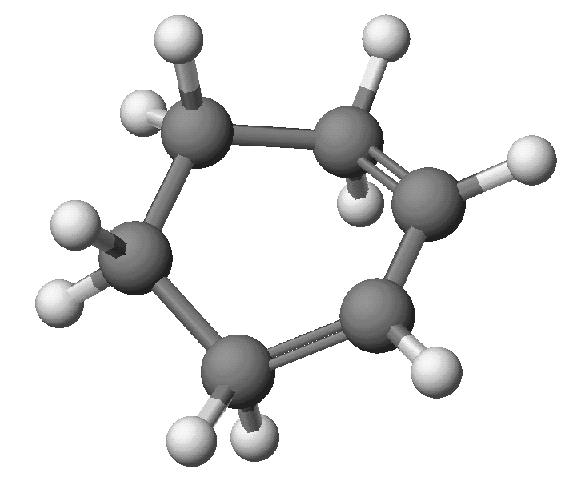
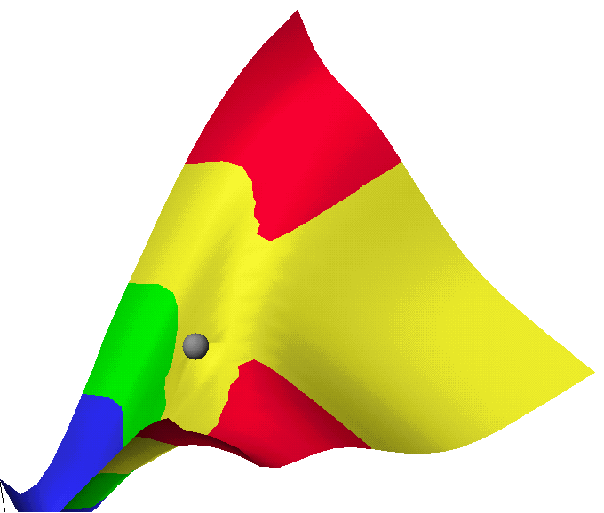

The method used is AM1, although other methods could, of course, be used. The calculations described here do not depend on the method used.
Cis-butadiene and ethylene form distinct species separated by a
large distance. DHf C2H4:
+16.45 Kcal/mol; DHf C4H6:
+30.64 Kcal/mol; DHf C2H4
+ C4H6: +47.17 Kcal/mol
At the transition state, the two C -- C bonds that are forming both have distances of 2.119Angstroms, that is, they are symmetric, and the geometry of the transition state has Cs symmetry. DHf: +70.08 Kcal/mol.

In cyclohexene there is one double bond, the rest of the C-C bonds being
normal, single, bonds. DHf C6H10:
-6.88 Kcal/mol.
Use of a GRID to generate the transition state:
Reaction occurs when the C -- C distances decrease to those in single bonds. There are two of these, between the carbon atoms of ethylene and the C1 and C4 atoms of butadiene. Inspection of the Potential Energy Surface shows a smooth increase in energy in going from the reactants to the products. The transition state is likely to be located somewhere on the rounded ridge between reactants and products, but simple inspection does not indicate whether the transition state is symmetry or not. However, the transition state must be either symmetric or unsymmetric. By selecting a point on the ridge, but not the symmetric point, a transition state refinement can be run. If the transition state is indeed symmetric, then the refinement would produce that. This is, in fact, what happened.
The files used in these calculation can be found in the ZIP file.